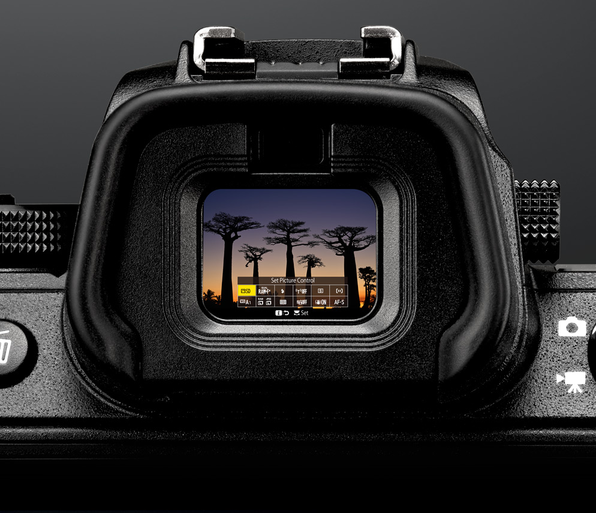
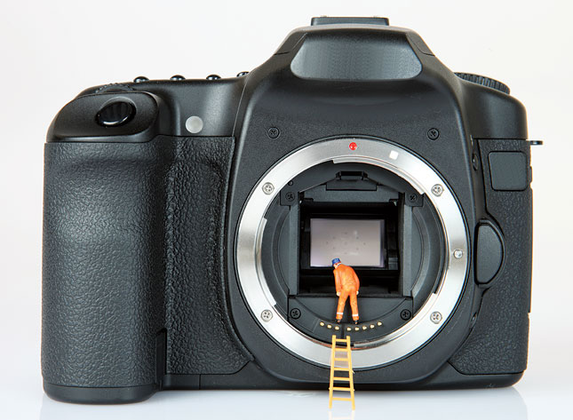

A diagram of a DSLR camera along with the parts.
The viewfinder is a eye piece on a camera that you hold your eye close to, and allows you to see what's going to be photogrpahed before you take it.
The sensor of a camera reads the light and produces an image out of it. Without this, a camera would be useless because... well... a camera takes photos. It captures the light and turns it into signals which rseults in an image.
The mirror in a DSLR camera reflects the light from the lens into the viewfinder, which allows you to lioik through it and frame a shot.
The shutter release opens the shutter to capture a picture. In that time period, the camera reads the light and converts it into an image. You can change the shutter speed on a DSLR camera to what ever you want. Pressing the button down half way will auto focus the camera.
This is the built on flash on the camera. You DO NOT want to use it, because it's a small portion of light on a subject which usually ends up giving you terrible images. Professional photographers use something like a softbox to add a lot of light and put it smoothly across a surface.